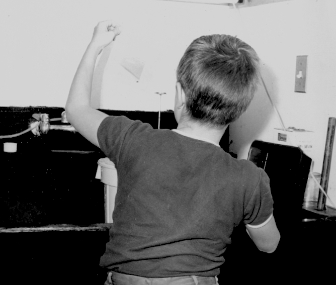

About Me
My dad built a darkroom in the basement when I was 4. It was a real room with a big sink, heat, and an exhaust fan. He jackhammered a hole in the floor for a dry well to drain the rinse water. I clearly remember the first time I watched a white piece of paper floating in the developer, under red safelight, as the image emerged. I was smitten.
Dad and my two older brothers used it a lot. Dad did technical photography professionally and we also had the gear to make photo-silk screens. Most of the photography dad did at home was taking pictures for the shows and musical events my older siblings were in at school. So, I was exposed to lots of 60’s era tech as a youngster, and it kind of sunk in.
Since there were at least three photographers in the house, there were spare cameras and I had interest in doing something myself. I picked up a camera that was lying in the back of a drawer and bought some film and took pictures of our cats. The camera was an East German 35mm Praktiflex. It was in the back of the drawer for a reason, apparently. The light seals weren’t very good and I had to use electrical tape when I loaded a new roll of film so the film wouldn’t be exposed through the back of the housing. There was no built in light meter, so I had to learn to use a separate light meter.
Connect with Me